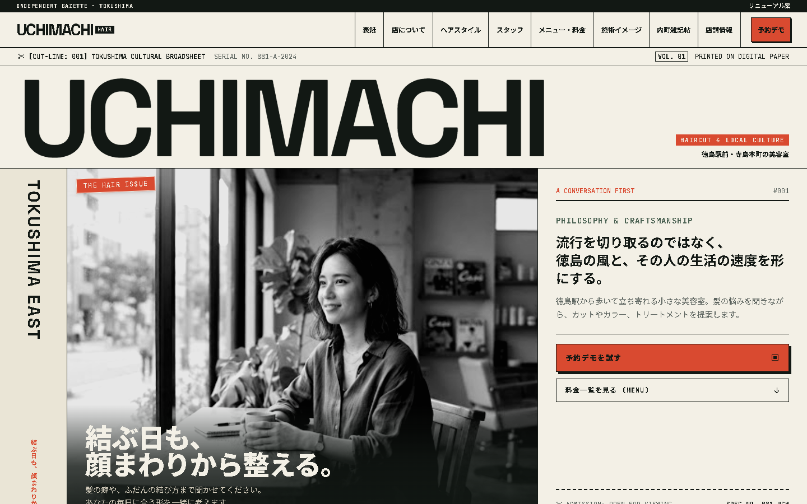
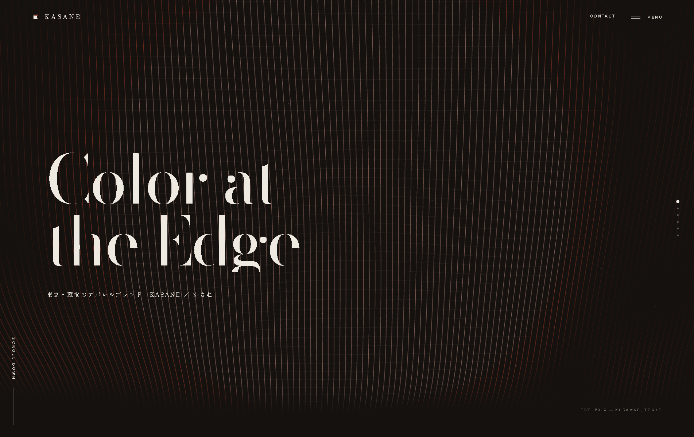
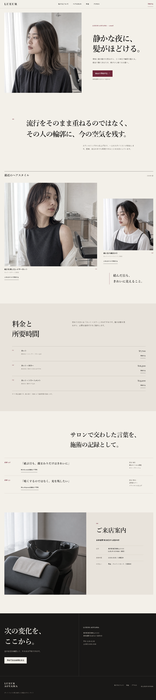

WebサイトUCHIMACHI HAIR
架空の美容室／自主制作
Webサイト / 架空の美容室／自主制作
UCHIMACHI HAIR
髪の変化やサロンの空気が伝わるよう、写真を中心に構成した美容室サイト。施術例からメニューまで、スマホでも迷わず読める流れを組みました。
Portfolio archive
お店の雰囲気をどう伝えるか。画面を見た人が次に何を知りたいか。Webサイトや映像にするときに考えたことを、制作物と一緒に紹介します。
ここに並ぶ6件のうち、実際にご依頼をいただいたのは STUDIO FREE 様の映像1件です。ほかの5件は、架空のお店やブランドを題材にして自分で作った見本で、受注実績ではありません。

Webサイト架空の美容室／自主制作
Webサイト / 架空の美容室／自主制作
髪の変化やサロンの空気が伝わるよう、写真を中心に構成した美容室サイト。施術例からメニューまで、スマホでも迷わず読める流れを組みました。
 Webサイト
Webサイト架空のベーカリー／自主制作
Webサイト / 架空のベーカリー／自主制作
パンが焼き上がる工房を入口に、商品やお店の情報を案内するベーカリーサイト。写真の色と文字の間隔を整え、焼きたての温かさが伝わる画面にしました。
 Webサイト
Webサイト架空のオーディオブランド／自主制作
Webサイト / 架空のオーディオブランド／自主制作
スピーカーを主役にしたオーディオブランドサイト。黒い背景に筐体の輪郭を見せ、製品、技術、音の体験へ自然に進めるように設計しました。
 映像
映像クライアントワーク
映像 / クライアントワーク
サロンの施術を紹介する縦型広告。スマホでの視聴を想定し、最初の一言から短い時間で内容が伝わる構成にしました。

Webサイト架空ブランド／自主制作
Webサイト / 架空ブランド／自主制作
架空ブランドのWebサイト。写真と余白を使い、ブランドの雰囲気がトップページから伝わるように設計しました。

Webサイト架空ヘアサロン／Webデザイン自主制作
Webサイト / 架空ヘアサロン／Webデザイン自主制作
架空のヘアサロンを題材にした自主制作。店内のイメージからメニューや来店情報へ進めるサロンサイトです。